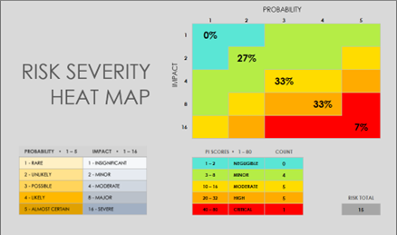
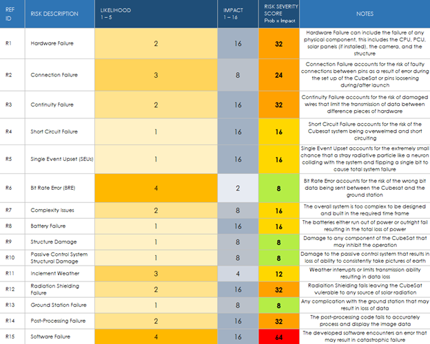
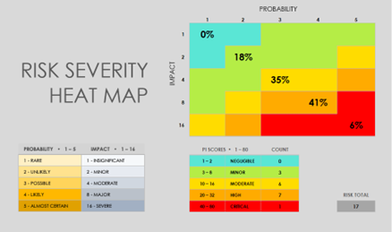
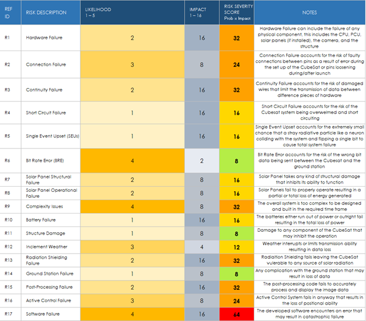
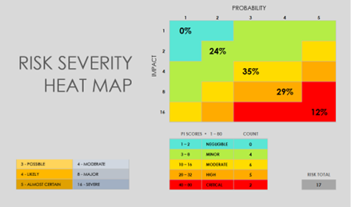
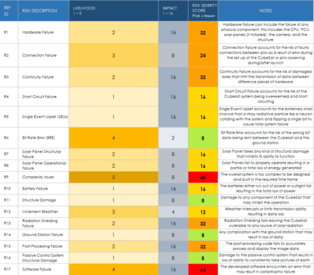

Risk Analysis
Each concept has both shared and individual risks. The red-zone risks are minimal for this project. Most catastrophic failures that could occur are unlikely enough to provide minimal consideration into their prevention. Each configuration shares one red-zone risk that must be accounted for. Configuration 3 has one additional red-zone risk that will also be accounted for conceptually in this section.
Software failure is the most probable catastrophic risk of the project for each configuration. The risk simplifies to the developed code not being properly debugged before the mission. Software error during the mission could result in loss of data or total loss of operational capability. To mitigate this risk, more time needs to be allocated to developing the software of the CubeSat. The code development process will possess stages in of itself that each need ample time to prevent serious error during operation. Particularly, the final stage of the code development process: the debugging phase, will need extended amount of time to mitigate this red-zone risk. The requirement of more time will result in a focus on the communications and software architecture first in the detailed design stage of this project.
Configuration 1
 Configuration 2
 Configuration 3
 For configuration 3, the additional red-zone risk represents the additional complexity of the design of the configuration. There are limited solutions to the inherent risk taken when designing something new instead of using standardized tools and equipment. The mitigation of this red-zone risk, if this concept is chosen, would be bringing in an expert to act as a consultant in the custom board design process. This would increase the budget expenses but would mitigate the red-zone risk somewhat.